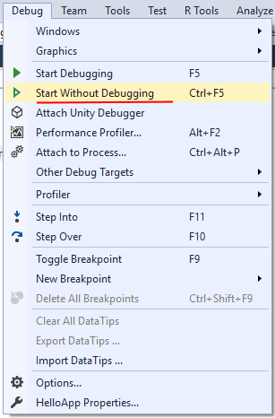

Первая программа в Visual Studio
Для создания программы на C++ нам нужны, как минимум, две вещи: текстовый редактор для набора кода и компилятор для превращения этого кода в приложение. При этом для компиляции необходимо запускать консоль или терминал. Однако есть и более удобный способ - использование различных сред разработки или IDE. Они, как правило, содержит встроенный текстовый редактор, компилятор и позволяют скомпилировать и запустить программу по одному клику мыши, а также имеют еще множество разных вспомогательных возможностей.
Для программирования под Windows наиболее популярной средой разработки, если говорить о C++, является Visual Studio. Данную среду можно найти по ссылке https://www.visualstudio.com/ru/vs/. Она доступна в ряде редакций. В частности, можно использовать бесплатную и полнофункциональную версию Visual Studio 2017 Community.
После загрузки и запуска установщика Visual Studio в нем необходимо отметить пункт "Разработка классических приложений на C++":

Выбрав все необходимые пункты, нажмем ОК для запуска установки. После установки Visual Studio создадим первый проект. Для этого перейдем в меню File (Файл) -> New (Создать) -> Project... (Проект), и нам откроется окно создания нового проекта. В нем перейдем в левой части окна к языку С++ и выберем его подсекцию General:
В центральной части окна в качестве типа проекта выберем Empty Project, а внизу окна в поле для имени проекта дадим проекту имя HelloApp и нажмем на ОК для создания проекта.
После этого Visual Studio создаст пустой проект. Добавим в него текстовый файл для набора исходного кода. Для этого в окне Solution Explorer (Обозреватель решений) нажмем правой кнопкой мыши на узел Source Files и в контекстом меню выберем Add -> New Item...:

Затем нам откроется окно для добавления нового элемента:
Здесь нам надо выбрать пункт C++ File(.cpp), а внизу окна укажем для файла имя Hello.cpp. Как правило, исходные файлы на C++ имеют расширение .сpp.
После добавления файла изменим опции проекта. Для этого перейдем к пункту меню Project -> Properties:
И в открывшемся окне свойств проекта в левой части перейдем к секции Linker -> System и далее для поля SubSystem установим значение Console(/SUBSYSTEM:CONSOLE), выбрав нужный элемент в списке:
Тем самым мы указываем, что мы хотим создать консольное приложение. После установки этого значения нажмем на кнопку "Применить", чтобы новые настройки конфигурации вступили в силу.
После добавления файла проект будет иметь следующую структуру:
Вкратце пробежимся по этой структуре. Окно Solution Explorer содержит в решение. В данном случае оно называется HelloApp. Решение может содержать несколько проектов. По умолчанию у нас один проект, который имеет то же имя - HelloApp. В проекте есть ряд узлов:
- External Dependencies: отображает файлы, которые используются в файлах исходного кода, но не являются частью проекта
- Header Files: предназначена для хранения заголовочных файлов с расширением .h
- Resource Files: предназначена для хранения файлов ресурсов, например, изображений
- Source Files: хранит файлы с исходным кодом
Теперь собственно создадим первую программу и определим в файле Hello.cpp простейший код, который будет выводить строку на консоль:
#include < iostream> // подключаем заголовочный файл iostream
int main() // определяем функцию main
{ // начало функции
std::cout << "Hello World!"; // выводим строку на консоль
return 0; // выходим из функции
}
Здесь использован весь тот код, который был рассмотрен в предыдущих темах про компиляцию с помощью g++.
Теперь запустим программу. Для этого в Visual Studio нажмем на сочетание клавиш Ctrl+F5 или выберем пункт меню Debug -> Start Without Debugging:
И в итоге Visual Studio передаст исходный код компилятору, который скомпилирует из кода исполняемый файл exe, который потом будет запущен на выполнение. И мы увидим на запущенной консоли наше сообщение:
После этого на жестком диске в проекте в папке Debug можно увидеть скомпилированный файл exe, который мы можем запускать независимо от Visual Studio:
В данном случае файл HelloApp.exe как раз и представляет скомпилированный исполняемый файл. И, кроме того, в той же папке автоматически генерируются два вспомогательных файла:
- HelloApp.ilk: файл "incremental linker", который используется компоновщиком для ускорения компоновки
- HelloApp.pdb: файл, который содержит отладочную информацию
 Лабораторная №1
Лабораторная №1